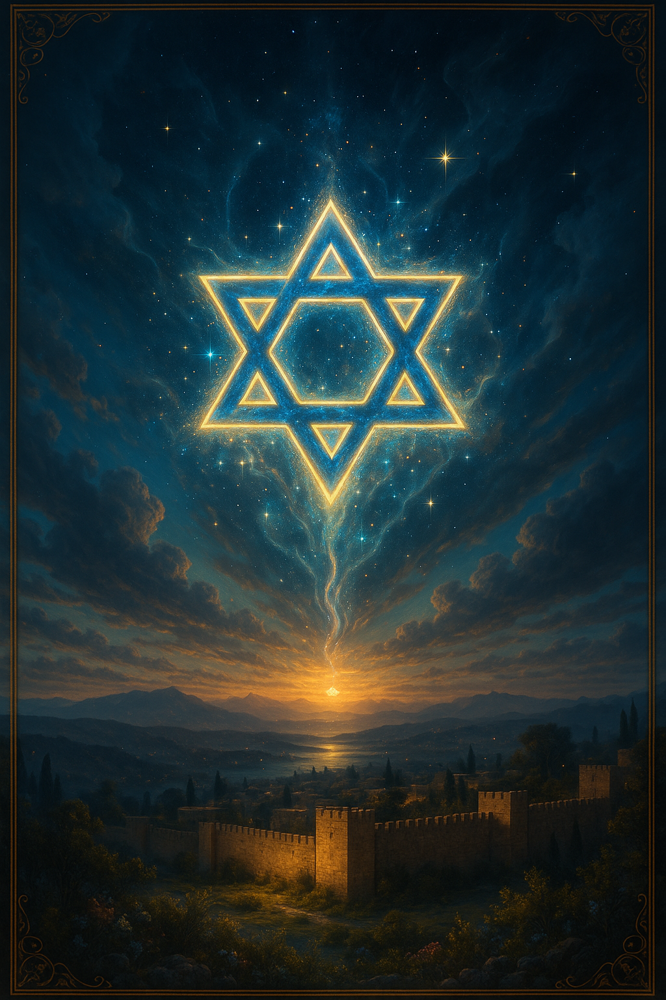
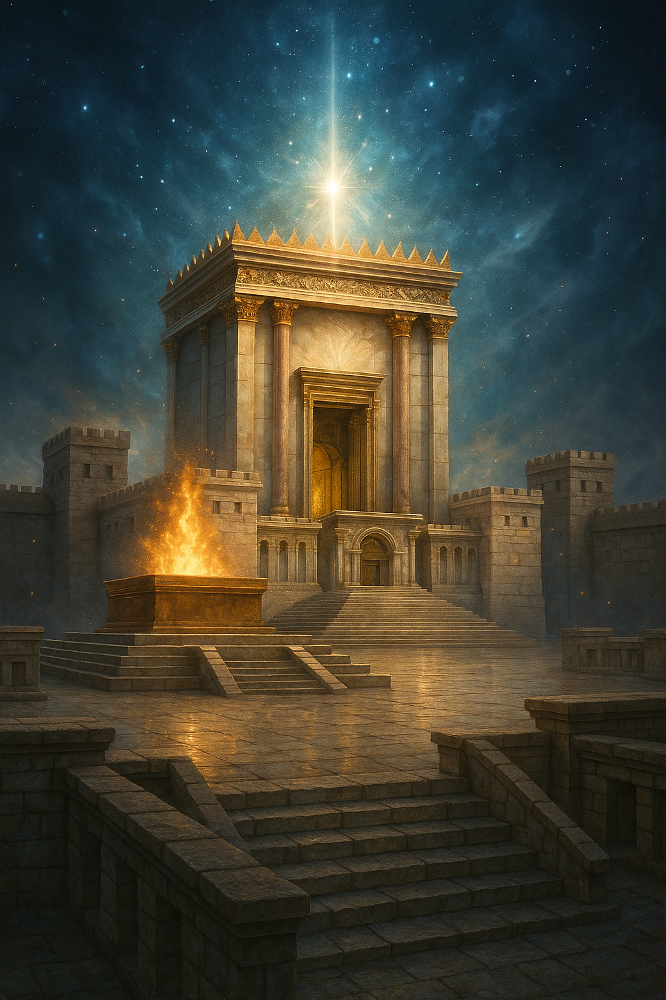

מסע רוחני ומיסטי ביום העצמאות – תפילה, שירה, חזון ועוצמה
פרויקט "ישראל 77-5786" הוא יצירה משולבת של שירה, חזון, תפילה וגרפיקה מיסטית, המובלת על ידי הרב משה לאון יעקובוב. הפרויקט נולד מתוך רצון לקדש את חג העצמאות באור של קדושה, זוהר וחזון רוחני עמוק.
שלושה מזמורים מיוחדים שנכתבו לכבוד יום העצמאות ה-77, משלבים בתוכם שירה, תפילה וחזון לעתיד האומה.
אוסף רקעים מיסטיים, הולוגרפיים ועתירי השראה לציון 77 שנות עצמאות. כל תמונה משדרת עומק, זוהר, ותחושת ייעוד לאומי.


רוצים להוריד את הקבצים, להצטרף לשיעור מיוחד של הרב ביום העצמאות, או לשתף אותנו בהשראה שקיבלתם? לחצו כאן.